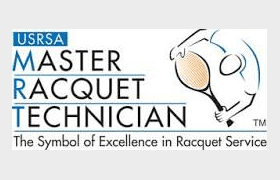

Tennis: Babolat, Dunlop, Head, Tecnifibre, Wilson and Yonex
Pickleball: Joola, Selkirk, Master Athletics, Wilson, Babolat, Head and Holbrook (We can order other brands for you)
Padel: Wilson, Technifibre, Babolat
Squash: Wilson, Technifibre
Platform Tennis (Paddle): Xenon, Master Athletics and Wilson
Demos:
All tennis racquets, pickleball, platform, and padel paddles for sale are available to demo.
There is a $25.00, one-time fee to demo, during a 2 month time period. Demo up to three Racquets / Paddles at a time, for three days at a time. It might take more than one demo session to determine which racquet suits your needs. The demo fee is then credited towards the purchase of any new adult frame.
Bring your current racquet with you to begin the demo process, as it gives us a great starting point of what you you might want to demo. As MRT and CS certified stringers, we are able to assist you in determining the racquet best suited to your game.
Bring your own string or choose from our many options from Head, Luxilon, Solinco, Wilson, Babolat. We string both tennis and squash racquets.
Two Master Racquet Technicians (MRT), and four Certified Stringers (CS), with the United States Racquet Stringer’s Association (USRSA) are on staff. Philip van Asselt, has been a member of the USRSA since 1998 and is also a member of the International Alliance of Racquet Stringers (IART) dedicated to improving and promoting stringing and serving the needs of the tennis playing community.

An understanding of string and how it reacts is what defines a certified racquet stringer. Let us help you take some of the guesswork out of the array of options available. Our stringer’s have worked at the highest level, stringing for the pros on the ATP & WTA Tour. The pros on tour expect consistency and we strive to bring the same level of commitment to our customers.
Due to high volume of racquet stringing, same day stringing isn’t always available – usual stringing turn-around is 24 hours.
The Supply chain issues seem to be behind us although some brands are still in short supply going into Spring 2023.
We have good supplies of Wilson, Nike, Diadora, K Swiss, Mizuno, Yonex and Adidas footwear at this time. Asics has closed most Tennis Retail accounts at this moment and is no longer consistently available.
Apparel:
A full selection of the latest Women’s, Men’s and Children’s apparel from Nike, Adidas, Babolat, Fila, Lacoste, Yonex, Inphorm, Sofibella, Bolle and Boast. Stop in today for the best selection of new merchandise.